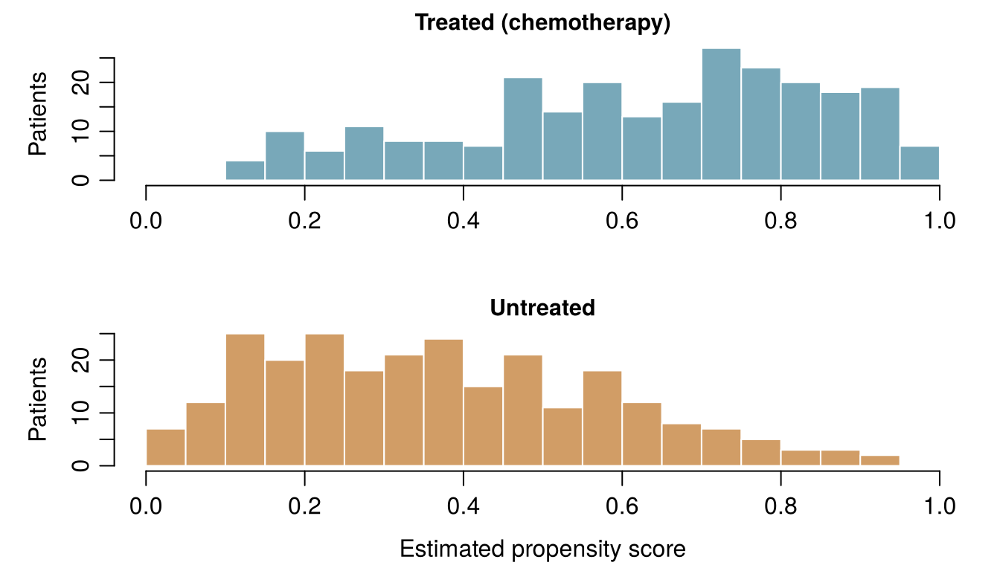

flowchart TD
S["What will you do with the answer?"] --> Q1{"Will you change something because of it?<br/>treat, stop, invest, set a policy"}
Q1 -- "yes" --> I["INTERVENE<br/>What would happen if we did A?<br/>Needs a trial, or a causal diagram<br/>plus adjustment (this chapter)"]
Q1 -- "no" --> Q2{"Do you need a number for a new person<br/>whose outcome is not yet known?"}
Q2 -- "yes" --> P["PREDICT<br/>What will happen to this person?<br/>Supervised learning, judged on unseen data<br/>(Chapters 3 to 8)"]
Q2 -- "no" --> E["EXPLAIN / DESCRIBE<br/>What patterns are in the data?<br/>Associations, groups, explanations<br/>(Chapters 4, 10 to 12)"]
P --> Q3{"Will the prediction be used<br/>to choose a treatment?"}
Q3 -- "yes" --> I
Q3 -- "no" --> P2["Prediction is enough:<br/>check calibration and transportability"]
13 From prediction to causation
Five questions the Ward 7 and ONCO-1 teams might ask. Is each one a question about what will predict an outcome for someone, about explaining patterns already in the data, or about what would happen if we intervened? Take your best guess: the first section explains the difference.
| Question | Kind of question |
|---|---|
| What is Aoife's probability of AKI in the next 48 hours? | |
| If adherence were raised to at least 90 % for every patient, how many AKI cases would be avoided? | |
| Do patients in hospital D have larger creatinine rises, on average, than patients in hospital A? | |
| Would patient #0042's tumour have shrunk less without chemotherapy? | |
| Which of tonight's three patients is most likely to need dialysis? |
How to use this chapter
Starting here?
This chapter borrows a few ideas from earlier chapters. In brief:
- Observational and experimental data (Definition 1.2). Observational data record what happened in routine care; experimental data come from a design in which the investigator assigns the exposure, ideally at random, as in the ONCO-1 trial.
- Confounding, first look (Section 1.10). On Ward 7, sicker patients (higher SOFA score) receive less of the care protocol and have larger creatinine rises. A regression of the creatinine rise on adherence alone gives −0.53 per unit of adherence; adding SOFA gives −0.30; the value used to simulate the data is −0.28.
- Coefficients (Chapter 4, Chapter 5). In a linear model, \(\beta_j\) is the expected difference in the outcome between two patients who differ by one unit in \(x_j\) and are alike in the other predictors in the model; in a logistic model \(e^{\beta_j}\) is an odds ratio. Both are associations.
- Expectation (Chapter 2). \(\mathbb{E}[Y]\) is the long-run average of \(Y\); \(\mathbb{E}[Y \mid A = 1]\) is the average among those with \(A = 1\).
- Train and test sets, leakage (Section 1.8, Chapter 3). Predictive models are judged on patients they have not seen. In ONCO-1, genes 08, 14 and 19 are noisy copies of the outcome (leakage); the genes that truly influence shrinkage are 01, 05 and 12.
| Example | Who or what | Outcome | Faces you will meet |
|---|---|---|---|
| 1 Ward 7 ICU | 1 250 ICU patients in 4 hospitals | change in creatinine over 48 h (acute kidney injury if ≥ 0.3 mg/dL) | Aoife (71, sepsis, borderline risk), Tomás (54, low risk), Priya (38, high risk); Dr Emma Walsh; Seán, the pharmacist |
| 2 ONCO-1 trial | 1 000 patients randomised to chemotherapy or not | tumour shrinkage (%) | patients #0042 and #0917 |
| 3 HomeBeat | 500 people wearing a smartwatch at home | stress score, deterioration event | Lena |
| 4 CellWorks | 420 production batches of a cell therapy | potency score | batch CW-118 |
All four datasets are simulated and can be downloaded from the data appendix. The full introduction is in Section 1.1.
This chapter moves from what will happen to what would happen if. It has eight sections and a Lab, seven quick checks, three “Try it” widgets, a challenge and three coding missions in R and Python. Allow about two hours. The mathematics is light (mostly averages), but the ideas are subtle, so read slowly and run the code.
Notation at a glance (for lookup only)
| Symbol | Meaning | Section |
|---|---|---|
| \(A\) | treatment or exposure (chemotherapy yes/no; protocol adherence) | Section 13.2 |
| \(Y\) | outcome (tumour shrinkage; change in creatinine) | Section 13.2 |
| \(Y(1)\), \(Y(0)\), \(Y(a)\) | potential outcomes: the outcome a patient would have under treatment, no treatment, or exposure level \(a\) | Section 13.2 |
| \(\mathbb{E}[Y(1)] - \mathbb{E}[Y(0)]\) | average treatment effect (ATE) | Section 13.2 |
| \(\tau(\mathbf{x})\) | conditional average treatment effect (CATE) for patients with features \(\mathbf{x}\) | Section 13.2 |
| \(L\) | a confounder, or a set of them | Section 13.3 |
| \(e(\mathbf{x})\) | propensity score: probability of treatment given features \(\mathbf{x}\) | Section 13.5 |
| \(w_i\) | inverse-probability weight of patient \(i\) | Section 13.5 |
The full list is on the notation page.
13.1 Three kinds of question
Every chapter so far has built a model that predicts: from what is known about a patient today, estimate what will happen to her. Prediction is enormously useful (it tells Emma that Aoife’s risk is close to the threshold and Tomás’s is low), but it is only one of three things we ask of data (Hernán, Hsu, and Healy 2019):
- Predict. What will happen to this patient? A good prediction uses any feature that carries information, whatever the reason it carries it. It is judged on new patients, by its error, its discrimination and its calibration (Chapters 3–8).
- Explain (or describe). What patterns are there in the data, and how do groups differ? How many patients developed AKI in each hospital; which genes are associated with response; which patients form natural groups (Chapters 4, 10–12). These are summaries of the world as it was.
- Intervene. What would happen if we changed something? If we gave chemotherapy, stopped a drug, raised protocol adherence, funded a nurse. This is a causal question: it asks about a world we did not observe.
The third kind is the one decisions are made of: every alternative in Emma’s set \(\mathcal{A}\) is an action, and choosing among actions needs to know what each action would cause. In practice the “explain” kind often slides quietly into the third. “Patients with high adherence do better” is a description; “so raising adherence will make patients do better” is a causal claim that the description alone does not support.
A classic example comes from the lecture hall. Yellow-stained fingers predict lung cancer very well: people with them are many times more likely to develop it. A risk model could use them with profit. But nobody would prevent lung cancer by scrubbing fingers clean, because the stains do not cause the cancer. Both are consequences of a third factor, smoking, whose causal role was established by careful epidemiology (Doll and Hill 1950; Hill 1965). Yellow fingers are a good predictor and a useless intervention target.
Seán’s hospital wants a model to decide which ICU patients should have their vancomycin dose reduced to protect their kidneys. A vendor offers a model that predicts AKI with an AUC of 0.85. Which kind of question is the hospital really asking?
13.2 Interventions and counterfactuals
To ask causal questions precisely we need a language for “what would happen if”. The one used in medicine and epidemiology is that of potential outcomes, developed by Neyman for experiments (Splawa-Neyman, Dabrowska, and Speed 1990) and by Rubin for observational studies (Rubin 1974; Holland 1986; Hernán and Robins 2020).
Definition 13.1 (Intervention and counterfactual) An intervention sets a variable to a chosen value (give chemotherapy, set adherence to 90 %) instead of letting it take the value it would have taken on its own. A counterfactual is a statement about what would have happened under an intervention that did not, in fact, take place: “had Aoife received the bundle, her creatinine would have…”.
Write \(A\) for the treatment (or exposure) and \(Y\) for the outcome. In ONCO-1, \(A = 1\) means chemotherapy and \(A = 0\) none; \(Y\) is tumour shrinkage in percent.
Definition 13.2 (Potential outcomes) Each patient \(i\) has two potential outcomes: \(Y_i(1)\), the outcome she would have if treated, and \(Y_i(0)\), the outcome she would have if not treated. For an exposure with many levels, such as protocol adherence, there is one potential outcome \(Y_i(a)\) for every level \(a\). The individual causal effect is the difference \(Y_i(1) - Y_i(0)\).
Patient #0042 (trial record P5440), the 37-year-old with a grade G1 tumour whom you met in Chapters 4 and 5, received chemotherapy in ONCO-1, and her tumour shrank by 36.6 %: that is \(Y_{0042}(1)\). We will never observe \(Y_{0042}(0)\), the shrinkage her tumour would have shown without chemotherapy, because she cannot both receive and not receive it. Her near twin #0917 (P9541: same grade, dose and performance score, 46 years old) shrank by only 20.4 %, and the lasso logistic model of Chapter 5 gave them probabilities of a high response of 0.75 and 0.18. Those are predictions of what happens under chemotherapy; neither says what chemotherapy did for either of them. This is the fundamental problem of causal inference (Holland 1986): for every patient, at most one potential outcome is observed; the others are counterfactual. Individual causal effects are therefore never seen directly.
Only in a simulation can we fill in both columns, because there we wrote the rules that generate the outcome and can rerun them with the exposure changed while keeping everything else about each patient the same (Section 13.6 explains how). Table 13.1 shows six past Ward 7 patients with their recorded adherence and creatinine change, and two of their potential outcomes, at 50 % and at 90 % adherence.
| Patient | SOFA | Observed adherence | Observed change (mg/dL) | Y(0.5) | Y(0.9) | Effect of 50 % → 90 % |
|---|---|---|---|---|---|---|
| ICU_0002 | 7 | 0.887 | 0.242 | 0.350 | 0.238 | −0.112 |
| ICU_0011 | 3 | 0.469 | 0.373 | 0.364 | 0.252 | −0.112 |
| ICU_0025 | 8 | 0.669 | 0.609 | 0.656 | 0.544 | −0.112 |
| ICU_0048 | 8 | 0.907 | 0.053 | 0.167 | 0.055 | −0.112 |
| ICU_0103 | 7 | 0.907 | 0.552 | 0.666 | 0.554 | −0.112 |
| ICU_0777 | 9 | 0.594 | 0.556 | 0.582 | 0.470 | −0.112 |
Look at patient ICU_0048. Her recorded adherence was 0.907, very close to 90 %, and her observed change (0.053) is almost exactly her \(Y(0.9)\) (0.055). This is consistency: the observed outcome is the potential outcome under the exposure actually received. In the last column every patient has the same effect, −0.112 mg/dL, because the simulator’s rule is a straight line with no interactions (\(-0.28 \times 0.4\)). Real patients surely differ in how much they benefit.
Since individual effects cannot be observed, we aim at averages.
Definition 13.3 (Average and conditional average treatment effects) The average treatment effect (ATE) in a population is \[ \text{ATE} = \mathbb{E}[Y(1)] - \mathbb{E}[Y(0)] , \qquad(13.1)\] the difference between the average outcome if everyone were treated and the average outcome if no one were. The conditional average treatment effect (CATE) is the same contrast within a subgroup of patients with features \(\mathbf{x}\): \(\tau(\mathbf{x}) = \mathbb{E}[Y(1) - Y(0) \mid \mathbf{X} = \mathbf{x}]\).
Compare Equation 13.1 with what data show directly: \[ \mathbb{E}[Y \mid A = 1] - \mathbb{E}[Y \mid A = 0] , \qquad(13.2)\] the difference between the average outcome of those who happened to be treated and those who happened not to be. Equation 13.1 compares the same population under two interventions; Equation 13.2 compares two different groups of people. The two coincide only when the treated and untreated are alike in everything that affects the outcome, that is, when they are exchangeable. On Ward 7 they are not: patients with high adherence are, on average, less sick.
Hernán and Robins (2020) list three conditions under which a causal effect can be computed from data:
- Exchangeability: given the measured covariates, who received which treatment is unrelated to the potential outcomes (no unmeasured confounding).
- Positivity: every kind of patient had a real chance of receiving each treatment.
- Consistency: the treatment is defined clearly enough that “the outcome under \(A = a\)” means one thing, and the observed outcome equals the potential outcome under the treatment received.
Consistency sounds pedantic until you try a real question. In Chapter 4 Seán asked whether raising Aoife’s albumin would protect her kidneys. Albumin can be higher because a patient is less inflamed, better nourished or because she received an albumin infusion; these are different interventions, which may have different effects. A dataset of naturally varying albumin levels says little about infusions. Before asking “what is the effect of \(A\)?”, say exactly what you would do.
An analyst says: “To find the effect of chemotherapy for patient #0917, compare her tumour shrinkage under chemotherapy with her shrinkage without it.” What is the difficulty?
13.3 Drawing assumptions: causal diagrams
Potential outcomes say what we want to estimate. To decide how, we need to state what we believe about how the variables influence one another. The most transparent way is a drawing.
Definition 13.4 (Directed acyclic graph (DAG)) A causal directed acyclic graph is a diagram in which each variable is a node and an arrow \(X \rightarrow Z\) means “\(X\) directly influences \(Z\)”. Directed: every arrow has a direction. Acyclic: following the arrows you can never return to where you started. Missing arrows are the strongest assumptions in the diagram: each one says “no direct effect” (Pearl 1995, 2009; Greenland, Pearl, and Robins 1999).
Any path between treatment and outcome is a chain of arrows, followed in either direction. Three small structures are enough to understand every DAG (Figure 13.2).
Definition 13.5 (Confounder) A confounder is a common cause of the treatment and the outcome (\(A \leftarrow L \rightarrow Y\)). It opens a backdoor path from \(A\) to \(Y\), a path that starts with an arrow into \(A\), along which association flows without any effect of \(A\). Adjusting for \(L\), comparing like with like, blocks that path.
Definition 13.6 (Mediator) A mediator lies on a causal path from treatment to outcome (\(A \rightarrow M \rightarrow Y\)): it carries part of the effect. Adjusting for it removes the part of the effect that flows through it, so the result is no longer the total effect of \(A\).
Definition 13.7 (Collider) A collider is a variable caused by two others on the same path (\(A \rightarrow C \leftarrow Y\)). A path through a collider is closed as long as we leave the collider alone. Adjusting for it, or selecting patients according to it, opens the path and creates an association that has nothing to do with the effect of \(A\) (Hernán, Hernández-Díaz, and Robins 2004; Cole et al. 2010).
The collider is the least intuitive of the three. Suppose that, in the general population, two diseases occur independently, and that either one is enough to put a person in hospital. Among hospital patients, someone who does not have the first disease must have been admitted for something, often the second. So in hospital data the two diseases look negatively associated, although they are unrelated outside. This is Berkson’s bias (Berkson 1946): being in hospital is a collider, and studying only hospital patients conditions on it. The ONCO-1 leaky genes are another example: genes 08, 14 and 19 were generated from the outcome, so they are its descendants, and adjusting for them would distort the effect of chemotherapy exactly as it distorted the performance estimates in Chapter 3.
The three structures combine into one rule.
Definition 13.8 (Backdoor criterion) A set of measured variables \(L\) is sufficient to estimate the causal effect of \(A\) on \(Y\) by adjustment if (1) it blocks every backdoor path between \(A\) and \(Y\), and (2) it contains no descendant of \(A\): no mediator, and no collider or other variable caused by the treatment (Pearl 1995, 2009). Then, within levels of \(L\), treated and untreated patients are exchangeable.
For yellow fingers the diagram is a fork: smoking → yellow fingers and smoking → lung cancer, with no arrow between fingers and cancer. The backdoor path fingers ← smoking → cancer is open, so the two are associated; adjusting for smoking closes it, and within smokers (or within non-smokers) fingers no longer predict cancer.
Yellow fingers. In this illustrative population 30 % of people smoke. Smoking stains fingers and causes lung cancer; the stains themselves cause nothing. The sliders set the proportion of smokers with stained fingers and their risk of lung cancer (among non-smokers, 5 % have stained fingers and 1 % develop lung cancer). Compare the risk ratio for “yellow fingers” in the whole population with the risk ratio within smokers and within non-smokers, and with what an intervention that cleaned everybody’s fingers would achieve.
A study recruits only patients admitted to an ICU and finds that, among them, diabetes is associated with lower mortality. Both diabetes and a severe acute illness make ICU admission more likely. What is the most likely explanation?
13.3.1 The Ward 7 diagram
Because Ward 7 is simulated, we know its true DAG: it is the generating code of sim_ward7_icu_aki.R, drawn as arrows (Figure 13.3). Severity (SOFA (Vincent et al. 1996)) lowers protocol adherence, worsens blood pressure, raises urea (BUN) and CRP and lowers albumin, and all of these affect the creatinine rise. Age acts through baseline creatinine. Adherence affects the outcome directly and has no other consequence in the data.
There is exactly one backdoor path, adherence ← SOFA → creatinine (with branches through the severity markers, which all start at SOFA). Adjusting for SOFA blocks it; nothing in the data is a descendant of adherence. So by the backdoor criterion, \(\{\text{SOFA}\}\) is a sufficient adjustment set, which is why the adjusted estimate of Chapter 1 landed close to the truth.
Real problems are rarely this tidy, so the widget below uses Ward 7, extended: a second simulated ward with the same rules and three more recorded variables whose roles we know. Nurse staffing affects adherence and nothing else. The protocol stops nephrotoxic drugs, so adherence lowers nephrotoxic drug exposure, which in turn raises creatinine: a mediator. And the protocol asks for creatinine every few hours, while worried clinicians re-test a rising creatinine, so the number of creatinine tests ordered is caused by both adherence and the outcome: a collider. The total effect of adherence is still −0.28 per unit (−0.18 directly, about −0.10 through nephrotoxic drugs).
Choose an adjustment set. Tick the variables you would adjust for in a linear regression of the creatinine change on adherence, and watch the estimate move against the truth (dashed line). Adjusted variables are shaded in the diagram. Target: find the set that gives an unbiased estimate with the narrowest interval.
Three lessons hide in the widget. First, more adjustment is not always better: adding the collider to SOFA moves the estimate from −0.27 to −0.57, far from the truth, and with a narrower interval: precise and wrong. Second, adjusting for the mediator gives −0.19, roughly the direct effect: a correct answer to a different question (“what if adherence changed but nephrotoxic drugs did not?”). Third, variables that affect only the outcome (baseline creatinine) sharpen the estimate, while variables that affect only the treatment (staffing) blur it. No statistical test on the data can tell these roles apart; only the diagram can.
In ONCO-1, chemotherapy shrinks tumours partly by lowering a proliferation marker measured at week 6. An analyst estimates the effect of chemotherapy on week-12 shrinkage adjusting for the week-6 marker and finds a much smaller effect than the trial’s simple comparison. Which statement is right?
The question is the effect of a variable A on an outcome Y. What role does the third variable play in each case?
- A: statin prescription. Y: myocardial infarction. Third variable: LDL cholesterol measured six months after starting the statin. Mediator
- A: protocol adherence on Ward 7. Y: creatinine change. Third variable: SOFA score on admission. Confounder
- A: vaccination. Y: severe influenza. Third variable: being tested for influenza at a hospital (more likely if vaccinated people are monitored more closely, and if symptoms are severe). Collider
- A: chemotherapy in ONCO-1. Y: tumour shrinkage. Third variable: being invited to an imaging sub-study, offered to patients whose tumours shrank markedly and to patients with side effects of chemotherapy. Collider
- A: chemotherapy in ONCO-1. Y: tumour shrinkage. Third variable: the patient’s blood group, unrelated to both. None of these
- A: yellow fingers. Y: lung cancer. Third variable: smoking. Confounder
13.4 Randomisation: ONCO-1
If confounding is the problem, the cleanest solution is to remove the arrows into the treatment. That is what a coin does.
Definition 13.9 (Randomisation) In a randomised experiment the treatment is assigned by a chance mechanism that the investigators control and that is unrelated to any characteristic of the patients. Then no arrow enters \(A\) except from the coin, there is no backdoor path, and treated and untreated groups are exchangeable, for measured and unmeasured characteristics alike (Fisher 1935; Hernán and Robins 2020, ch. 2).
In the ONCO-1 sample of 1000 patients, 496 were randomised to chemotherapy and 504 to no chemotherapy. Randomisation does not make the two arms identical, but it makes their differences small and due to chance alone. A standard way to check is the standardised mean difference (SMD): the difference between the arms’ means divided by the pooled standard deviation. Values below about 0.1 are usually taken as good balance (Austin 2011). The first column of Table 13.3 shows that every covariate is balanced in the trial.
Because the arms are exchangeable, the simplest comparison estimates the average treatment effect: average shrinkage was 37.8 % with chemotherapy and 4.9 % without, a difference of 32.9 percentage points (95 % confidence interval 31.8 to 34.0). No model, no adjustment, no assumption about which genes matter: that is the power of randomisation. It is why regulators ask for randomised trials before approving treatments, and why a new drug discovered with AI still has to pass one (Chapter 18 returns to this).
Randomisation has limits too. Trials are expensive and slow; they enrol selected patients, who may differ from those treated in practice; some exposures (smoking, severity, a hospital’s staffing) cannot be randomised; and patients do not always take the treatment they were assigned. For these reasons most of the data a health system holds are observational, and the next section is about analysing them as if they came from a trial.
The trial’s answer. In ONCO-1 treatment was randomised, so the difference between the average shrinkage of the two arms estimates the effect of chemotherapy. Complete the last line.
The first term already uses mean(); the second must use the same function.
mean(treated) - mean(control)The first term already uses .mean(); the second must use the same method.
treated.mean() - control.mean()Why does randomisation remove confounding even by factors nobody measured?
13.5 Adjustment without randomisation
When the treatment was not randomised, we try to make the comparison fair by adjustment: comparing treated and untreated patients who are alike in every confounder. The backdoor criterion tells us which variables to adjust for; this section shows how. All methods here rest on the same assumption (that the chosen set blocks every backdoor path, i.e. no unmeasured confounding), and they differ in how they use the data.
13.5.1 Regression adjustment on Ward 7
The simplest way is the one Chapter 1 used: put the confounders in a regression model with the treatment. If the model’s form is right, the treatment coefficient estimates the effect. Table 13.2 shows the adherence coefficient under several adjustment sets, with the value used in the simulation for comparison.
| Adjusted for | Estimate | 95 % CI |
|---|---|---|
| Nothing (naive) | −0.53 | −0.62 to −0.44 |
| SOFA | −0.30 | −0.38 to −0.22 |
| SOFA and every other recorded variable | −0.29 | −0.35 to −0.23 |
| Every recorded variable except SOFA | −0.40 | −0.47 to −0.34 |
| Lowest blood pressure only (a proxy of SOFA) | −0.53 | −0.61 to −0.44 |
| Lactate and baseline creatinine (causes of the outcome only) | −0.51 | −0.60 to −0.43 |
Only the sets containing SOFA come close to −0.28. Adjusting for every recorded variable except SOFA helps a little, because blood pressure, BUN, CRP and albumin are imperfect proxies of severity, but the estimate (−0.40) is still far off: residual confounding. Adjusting for the causes of the outcome alone (lactate, baseline creatinine) does nothing for bias. Run the code to reproduce the first rows.
Block the backdoor. Using the Ward 7 diagram (Figure 13.3), add to the model the variable that blocks the only backdoor path from protocol adherence to the creatinine change. The last line prints the adherence coefficient.
The confounder is the severity score recorded on admission. Its column name has four letters.
fit <- lm(delta_creatinine_48h ~ protocol_adherence + sofa, data = icu)Add the name of the severity column, as a string: four letters.
cols = ["protocol_adherence", "sofa"]Regression adjustment works well when the outcome model is right. With many confounders, non-linear relationships or a binary treatment given to very different kinds of patients, it is easy to get the model wrong without noticing. The next three methods move the effort from modelling the outcome to modelling the treatment.
13.5.2 ONCO-1 in routine practice
To have a benchmark, we turn the ONCO-1 trial into an observational study. Imagine that, instead of a coin, oncologists had chosen: they offered chemotherapy more often to younger and fitter patients, to higher-grade tumours and to patients with low expression of gene_05 (which a previous study had linked with poor response). We mimic this by keeping each trial patient with a probability that depends on the arm and on these characteristics (sim_ch13_onco1_routine.R). The result, onco1_routine.csv, has 509 patients, 252 of them treated. Since every patient comes from the trial, we know what the right answer should be: the trial’s 32.9 percentage points.
In this “routine practice” dataset, treated patients are fitter (mean performance score 0.40 against 0.67) and have lower gene_05, both of which predict better shrinkage. The naive comparison gives 38.7 percentage points, an overestimate of about 6 points: part of the apparent benefit is the better prognosis of the patients oncologists chose to treat.
Definition 13.10 (Propensity score) The propensity score of a patient with covariates \(\mathbf{x}\) is her probability of receiving the treatment, \(e(\mathbf{x}) = P(A = 1 \mid \mathbf{X} = \mathbf{x})\). Rosenbaum and Rubin (1983) showed that if adjusting for \(\mathbf{X}\) removes confounding, then so does adjusting for the single number \(e(\mathbf{X})\): treated and untreated patients with the same propensity score are, on average, alike in all the covariates that went into it.
In observational data the propensity score is unknown, so we estimate it, usually with a logistic regression of the treatment on the confounders (Chapter 5). It is a model of the doctors’ decision, not of the outcome. Two warnings: put in the confounders (causes of treatment that also affect the outcome), not variables caused by the treatment. dose_intensity is zero for every untreated patient and would predict treatment perfectly, but it is a consequence of the decision; and do not judge the propensity model by its AUC, because what matters is the balance it achieves (Austin 2011).
Look at the estimated scores before going further (Figure 13.5). For an adjustment to be possible, the two histograms must overlap: for every kind of treated patient there must be untreated patients with a similar score, and vice versa. This is positivity in practice. Where the groups do not overlap, any method must extrapolate.

Three ways of using the propensity score follow.
Definition 13.11 (Inverse probability weighting (IPW)) Inverse probability weighting gives each treated patient the weight \(w_i = 1/e(\mathbf{x}_i)\) and each untreated patient \(w_i = 1/\{1 - e(\mathbf{x}_i)\}\), then compares weighted averages: \[ \widehat{\text{ATE}}_{\text{IPW}} = \frac{\sum_{i:A_i=1} w_i\, y_i}{\sum_{i:A_i=1} w_i} - \frac{\sum_{i:A_i=0} w_i\, y_i}{\sum_{i:A_i=0} w_i} . \qquad(13.3)\] The weighting creates a pseudo-population in which treatment no longer depends on the covariates, as in a trial (Hernán and Robins 2020, ch. 12; Austin 2011).
The intuition: a treated patient with \(e(\mathbf{x}) = 0.2\) belongs to a kind of patient who usually goes untreated; she is rare in the treated group, so she must stand in for five patients like her. A treated patient with \(e(\mathbf{x}) = 0.9\) represents only about one.
Definition 13.12 (Matching) Matching pairs each treated patient with one (or more) untreated patients who are similar (here, whose propensity scores are close) and discards those without a good partner. The outcome is then compared within pairs. Because it keeps the treated patients and finds controls for them, matching usually estimates the effect in the treated (ATT) rather than the ATE (Stuart 2010).
Stratification on the propensity score (comparing treated and untreated within, say, its fifths) is a fourth option with the same logic (Rosenbaum and Rubin 1983). Whatever the method, check whether it actually balanced the covariates: Table 13.3 shows the SMDs before and after.
| Covariate | Trial | Routine practice | After IPW | After matching | |
|---|---|---|---|---|---|
| age | Age | 0.05 | −0.42 | 0.03 | 0.02 |
| grade_G3 | Grade 3 | 0.00 | 0.34 | 0.01 | 0.05 |
| grade_G1 | Grade 1 | 0.05 | −0.17 | −0.05 | 0.06 |
| performance | Performance score | −0.07 | −0.42 | −0.02 | 0.05 |
| gene_05 | gene_05 | 0.02 | −0.75 | −0.06 | −0.06 |
Routine practice starts with large imbalances (gene_05 at −0.75); both weighting and matching bring every covariate below 0.1, close to the balance of the trial, but only for the covariates in the propensity model. Nothing can balance what was not measured. Table 13.4 collects the estimates.
| Method | Estimate |
|---|---|
| Randomised trial (benchmark, ATE) | 32.9 |
| Naive comparison | 38.7 |
| Regression adjustment | 33.3 |
| Inverse probability weighting (ATE) | 33.6 |
| Propensity-score matching (144 pairs) | 33.4 |
All three adjusted estimates land within about a point of the trial. Matching is a little different in spirit: it estimates the effect among the treated patients who could be matched. In this dataset 108 treated patients, mostly those with the very highest propensity scores, had no untreated partner within the caliper and were dropped, so the matched estimate describes the more “ordinary” treated patients.
How strongly did the oncologists choose? The slider sets how strongly treatment depended on the patients’ characteristics: 0 is a coin (a smaller randomised trial), 3 is very strong selection. For each setting, 100 routine-practice datasets were simulated; the bars show the middle 90 % of the estimates and the dots their average. The dashed line is the trial’s answer. Watch the naive comparison drift away, and watch what happens to the overlap of propensity scores and to the width of the IPW bar as selection grows stronger.
As selection grows, the propensity scores of the two groups pull apart towards 0 and 1. A few treated patients with scores near 0 (or untreated near 1) receive enormous weights, and IPW becomes unstable: positivity is almost violated. Regression adjustment stays tight here because its model happens to match how these data were generated; in real data that would be an assumption, and with little overlap it would be extrapolating silently. Matching copes by discarding the patients it cannot match, which changes the population the answer describes. When overlap is poor, the honest conclusion is often that the data cannot answer the question for everyone.
Weight the patients. The propensity score ps of every patient in ONCO-1 routine practice has already been estimated with a logistic regression on age, grade, performance score and gene_05. Complete the weights for the untreated patients; the last lines compute the IPW estimate.
The probability of not being treated is 1 - ps.
w <- ifelse(obs$chemo == 1, 1 / ps, 1 / (1 - ps))The probability of not being treated is 1 - ps.
w = np.where(obs["chemo"] == 1, 1 / ps, 1 / (1 - ps))In an observational dataset, almost every patient with a performance score of 2 was left untreated (estimated propensity scores below 0.02). What is the main consequence for IPW?
All of these methods share an unverifiable assumption: that the measured covariates include every confounder. A careful analysis therefore starts by writing down the trial it would have liked to run (eligibility, treatment strategies, start of follow-up, outcome) and then emulates that target trial with the observational data (Hernán and Robins 2016), and ends with a sensitivity analysis of how strong an unmeasured confounder would have to be to change the conclusion (VanderWeele and Ding 2017). Methods that estimate how effects vary between patients, \(\tau(\mathbf{x})\), such as causal forests (Wager and Athey 2018) and their Bayesian versions for several treatments and correlated outcomes at once (Sarti 2026), rest on the same assumptions.
13.6 Using simulated truth
Real data never reveal the true effect, so we cannot check whether an adjustment worked. Simulated data can, and this book’s running examples were built so that you can. The Ward 7 simulator is a structural causal model: a list of equations, one per variable, each computing the variable from its causes plus random noise (Pearl 2009). The file ward7_scm.R rewrites it as a function that reproduces icu_aki.csv exactly and accepts an intervention: it sets a variable to a chosen value for every patient while keeping each patient’s random noise unchanged. Running it twice, with adherence set to 1 and to 0, gives both potential outcomes for all 1 250 patients, and their average difference is the true ATE: −0.28 per unit of adherence.
Now return to the committee’s question: bring every patient up to at least 90 % adherence. In the data, this raises adherence by 21 percentage points on average (patients already above 90 % are unchanged). Table 13.5 compares the truth, obtained by running the simulator under the policy, with what the naive and the SOFA-adjusted coefficients would predict.
| Source | Coefficient | Mean change in creatinine (mg/dL) | AKI after the policy | AKI cases avoided per 1 000 patients |
|---|---|---|---|---|
| Simulator (truth) | −0.28 | −0.060 | 49.5 % | 85 |
| Naive coefficient | −0.53 | −0.114 | 42.4 % | 156 |
| SOFA-adjusted coefficient | −0.30 | −0.064 | 49.0 % | 90 |
Today 58 % of Ward 7 patients develop AKI. The policy would truly avoid about 85 cases per 1 000 patients. The naive coefficient promises 156: almost twice the benefit, enough to make a protocol nurse look like a bargain when the real return is about half. The adjusted coefficient is close to the truth.
The simulator also shows that a good predictor can give the wrong effect. Table 13.6 fits four linear models on the book’s shared training set and evaluates them on the test set (Chapter 3). The model with every variable except SOFA predicts far better than the SOFA-only model (blood pressure, BUN, CRP and albumin carry plenty of information), yet its adherence coefficient is badly confounded. The last row is the linear regression (OLS) of Chapter 4, with the same ten predictors and the same test MAE as in the model ledger (0.141 mg/dL); adherence + SOFA (0.187) predicts about as well as the SOFA-only line of Chapter 1 (0.191). The full model’s coefficient is close to the truth only because it includes SOFA, not because it predicts well.
| Model | Test MAE (mg/dL) | Adherence coefficient | Simulation |
|---|---|---|---|
| Adherence only | 0.222 | −0.516 | −0.28 |
| Adherence + SOFA | 0.187 | −0.294 | −0.28 |
| Adherence + every variable except SOFA | 0.154 | −0.409 | −0.28 |
| Adherence + every variable | 0.141 | −0.300 | −0.28 |
Simulated truth is a laboratory, not a substitute for thinking: it shows whether a method recovers an effect when its assumptions hold, and how badly it fails when they do not. That is how the methods of this chapter were developed and tested, and it is how you can test any pipeline before trusting it on real data.
13.7 What this means for decisions
Prediction models used for intervention decisions. Many clinical models are built to predict an outcome and then used to decide who should be treated. Two things can go wrong. First, a model trained on routinely treated patients predicts risk under current care, treatment included. A famous example: a model of pneumonia mortality learned that patients with asthma had lower risk, because they were routinely sent straight to intensive care; used to decide who could go home, it would have sent the most vulnerable patients away (Caruana et al. 2015). Second, high risk is not the same as high benefit: the patients most likely to develop AKI may be those whose kidneys a bundle can help least. Choosing whom to treat needs the effect of treatment, \(\tau(\mathbf{x})\), or at least risk without treatment, estimated with causal methods (Geloven et al. 2020).
The Table 2 fallacy. A paper reports a multivariable model in “Table 2” and readers interpret every coefficient as an effect. Only the coefficient of the variable the model was built for has a chance of being causal; the others are adjusted for a set chosen with someone else in mind (Westreich and Greenland 2013). Ward 7 shows it numerically. In the regression of the creatinine change on all recorded variables, the SOFA coefficient is 0.041, close to the simulator’s direct effect of SOFA, 0.04, because the model holds blood pressure, BUN, CRP, albumin and adherence fixed. But a patient one SOFA point sicker also has lower blood pressure, higher BUN and CRP, lower albumin and less adherence; running the simulator with SOFA raised by one gives a total effect of 0.060, about 45 % larger. Each question needs its own adjustment set, and a single model rarely answers more than one.
Explanations are not causes. Methods that explain a predictive model (feature importance, SHAP values, counterfactual explanations) describe how the model uses its inputs. They inherit every confounding of the data: a model could explain its prediction of lung cancer by yellow fingers. Chapter 12 treats these methods; read their output as hypotheses for a causal analysis, not as its result.
A published table reports a multivariable logistic model of AKI built to estimate the effect of a nephrotoxic antibiotic, adjusting for age, severity, baseline creatinine and blood pressure. The odds ratio for blood pressure is 0.80 per 10 mmHg. A reader concludes that raising blood pressure by 10 mmHg would cut the odds of AKI by 20 %. What is the problem?
So what should Emma and Seán tell the committee? Not “the consultancy’s coefficient says we will halve AKI”. Something like: the raw audit and the risk model exaggerate the benefit of adherence because sicker patients receive less of the protocol; after adjusting for severity, our best estimate is about −0.3 mg/dL per unit of adherence, so the proposed nurse would prevent roughly one AKI case for every 11 patients, if severity is the only important confounder. If the decision is expensive, the most reliable answer would come from randomising wards or months to the new nurse.
13.8 Where this fits in the decision loop
Chapter 1 defined a decision as a choice among alternatives in \(\mathcal{A}\), made with knowledge \(\mathcal{K}\) about their consequences. Consequences of an alternative is another name for potential outcomes. A predictive model supplies one kind of knowledge (what is likely to happen under current practice), and that is often enough: to decide whom to watch closely tonight, to plan dialysis capacity, to warn a family. But when the alternatives are actions whose effects are uncertain, the information link of the decision-quality chain needs causal reasoning: a randomised comparison when it can be had, and otherwise a diagram that makes the assumptions explicit, an adjustment that respects it, and a check of overlap and balance. The values (how much one AKI avoided is worth a nurse’s salary) still belong to people.
13.9 Lab: causal effects on Ward 7 and ONCO-1
The Lab gathers the chapter’s code in one place: the Ward 7 adjustment, the three adjustment sets of Ward 7, extended, the ONCO-1 trial benchmark, and the four estimates from routine practice with a balance check. Run it here, or download it and run it on your computer: ch13_lab.R · ch13_lab.py. The code uses R (R Core Team 2024) and, in Python, pandas, NumPy and scikit-learn (McKinney 2010; Harris et al. 2020; Pedregosa et al. 2011).
R and Python agree on everything except matching, where the two languages shuffle the treated patients with different random-number generators and so build slightly different pairs; both estimates are close to the trial. Two observations to take forward. First, every adjusted estimate depends on the list of confounders: delete gene_05 from the propensity model and watch the estimates drift back towards the naive one. Second, the trial needed none of this machinery.
13.10 Exercises
- Name the question. For each running example (Ward 7, ONCO-1, HomeBeat, CellWorks), write one predict, one explain and one intervene question. For the intervene question, state the intervention precisely enough to satisfy consistency.
- Draw it. Draw a DAG for the effect of an influenza vaccine on hospital admission in older adults, including frailty (frail people are vaccinated less often and admitted more often) and a variable of your choice that is a collider. Which variables would you adjust for?
- Mediator or confounder? On Ward 7, Seán proposes to adjust the effect of adherence for “number of nephrotoxic drugs stopped in the first 24 hours”. Using Ward 7, extended, explain why this would underestimate the total effect, and when the adjusted number could still be useful.
- Collider by selection. In the DAG widget’s data (
ward7_dag.csv), estimate the effect of adherence adjusting for SOFA only among patients with seven or more creatinine tests. Compare with the estimate in all patients and explain the difference. - Proxies. Regress the Ward 7 creatinine change on adherence and CRP only. Then on adherence, CRP, BUN, blood pressure and albumin. Why does the estimate approach, but not reach, the SOFA-adjusted one?
- Remove a confounder. In the Lab, drop
gene_05from the propensity model. Recompute the IPW estimate and the balance table. What happened, and why could no diagnostic computed from the data alone have warned you? - Policy arithmetic. Using Table 13.5, how many patients must reach 90 % adherence for one AKI case to be avoided, according to the truth and according to the naive coefficient? If a protocol nurse costs as much as treating 40 cases of AKI per year and Ward 7 admits 1 250 patients a year, is the nurse worth it under each answer?
- Table 2. Choose a published clinical paper with a multivariable regression table. Which coefficient was the model built for? For one other coefficient, sketch a DAG showing why it might not be a causal effect.
Selected answers
3. The number of nephrotoxic drugs stopped is caused by adherence and affects the outcome: a mediator. Adjusting for it removes the part of the effect that works through stopping drugs, giving roughly the direct effect (about −0.19 in Ward 7, extended, against a total of −0.28). It is useful if the question is how much of the benefit comes from stopping drugs, a mediation question, which needs its own assumptions.
4. Restricting to patients with many tests selects on a collider. Among them, a patient with low adherence must have reached many tests through a rising creatinine, so low adherence and high creatinine appear together more often than they should, and the estimate is pushed away from the truth.
5. CRP, BUN, blood pressure and albumin all depend on SOFA, so adjusting for them removes part of the confounding. But each also has its own noise, so together they do not reproduce SOFA exactly: residual confounding remains (−0.40 with every variable except SOFA).
6. gene_05 is a strong confounder in routine practice; without it the weights do not remove its imbalance and the estimate moves back towards the naive one. The balance table would look good for the covariates still in the model. Balance can only be checked for what was measured and included, which is why the list of confounders must come from subject-matter knowledge, drawn as a DAG.
7. True: the policy avoids about 85 cases per 1 000 patients, one for every 12 patients, or about 106 a year. Naive: 156 per 1 000, one for every 6, or about 195 a year. With the stated cost, the nurse pays for itself under both answers, but the margin under the truth is about half of what the naive analysis promises, and with a costlier intervention the two answers could lead to opposite decisions.
13.11 Summary
- Data answer three kinds of question: predict (what will happen?), explain (what patterns are there?) and intervene (what would happen if we acted?). Decisions are made of the third kind.
- Potential outcomes \(Y(1)\) and \(Y(0)\) define causal effects; only one is observed per patient, so we estimate averages such as the ATE, \(\mathbb{E}[Y(1)] - \mathbb{E}[Y(0)]\), and the CATE. Identification needs exchangeability, positivity and consistency.
- A DAG makes causal assumptions explicit. Confounders open backdoor paths and must be adjusted for; mediators carry the effect and must not be, for a total effect; colliders are closed until adjusted for or selected on. The backdoor criterion says which sets suffice.
- Randomisation removes every arrow into the treatment, measured or not; in ONCO-1 a simple difference in means estimates the effect.
- Without randomisation, regression adjustment, propensity scores, inverse probability weighting and matching can recover the effect if no confounder is missing. Check overlap and balance; poor overlap makes weights unstable and answers narrower.
- Simulated truth lets us test methods: on Ward 7 the naive estimate doubles the benefit of adherence, and a model can predict well while giving a confounded coefficient.
- Do not read every coefficient in a model as an effect (Table 2 fallacy), and do not use a prediction of risk under current care as if it were a prediction of benefit.
Where this chapter is used later
| Idea from this chapter | Where it returns |
|---|---|
| Explanations of a predictive model are not causal effects | Chapter 12 (interpretability and explanations) |
| Actions, their consequences and learning from them; dynamic treatment regimes | Chapter 14 (reinforcement learning) |
| Randomised trials as the evidence bar for AI-discovered drugs | Chapter 18 (from language model to clinical assistant) |
| Synthetic data from a known generating process | Chapter 19 (generative models) |
Next: this chapter’s decisions were made once. In Chapter 14 the decision is repeated (a dose adjusted day after day), and each action changes the state in which the next one is taken.
References
Austin, Peter C. 2011. “An Introduction to Propensity Score Methods for Reducing the Effects of Confounding in Observational Studies.” Multivariate Behavioral Research 46 (3): 399–424. https://doi.org/10.1080/00273171.2011.568786.
Berkson, Joseph. 1946. “Limitations of the Application of Fourfold Table Analysis to Hospital Data.” Biometrics Bulletin 2 (3): 47–53. https://doi.org/10.2307/3002000.
Caruana, Rich, Yin Lou, Johannes Gehrke, Paul Koch, Marc Sturm, and Noemie Elhadad. 2015. “Intelligible Models for HealthCare: Predicting Pneumonia Risk and Hospital 30-Day Readmission.” In Proceedings of the 21th ACM SIGKDD International Conference on Knowledge Discovery and Data Mining, 1721–30. https://doi.org/10.1145/2783258.2788613.
Cole, Stephen R., Robert W. Platt, Enrique F. Schisterman, Haitao Chu, Daniel Westreich, David Richardson, and Charles Poole. 2010. “Illustrating Bias Due to Conditioning on a Collider.” International Journal of Epidemiology 39 (2): 417–20. https://doi.org/10.1093/ije/dyp334.
Doll, Richard, and A. Bradford Hill. 1950. “Smoking and Carcinoma of the Lung: Preliminary Report.” British Medical Journal 2 (4682): 739–48. https://doi.org/10.1136/bmj.2.4682.739.
Fisher, Ronald A. 1935. The Design of Experiments. Edinburgh: Oliver; Boyd.
Geloven, Nan van, Sonja A. Swanson, Chava L. Ramspek, Kim Luijken, Merel van Diepen, Tim P. Morris, Rolf H. H. Groenwold, Hans C. van Houwelingen, Hein Putter, and Saskia le Cessie. 2020. “Prediction Meets Causal Inference: The Role of Treatment in Clinical Prediction Models.” European Journal of Epidemiology 35 (7): 619–30. https://doi.org/10.1007/s10654-020-00636-1.
Greenland, Sander, Judea Pearl, and James M. Robins. 1999. “Causal Diagrams for Epidemiologic Research.” Epidemiology 10 (1): 37–48. https://doi.org/10.1097/00001648-199901000-00008.
Harris, Charles R., K. Jarrod Millman, Stéfan J. van der Walt, et al. 2020. “Array Programming with NumPy.” Nature 585 (7825): 357–62. https://doi.org/10.1038/s41586-020-2649-2.
Hernán, Miguel A., Sonia Hernández-Díaz, and James M. Robins. 2004. “A Structural Approach to Selection Bias.” Epidemiology 15 (5): 615–25. https://doi.org/10.1097/01.ede.0000135174.63482.43.
Hernán, Miguel A., John Hsu, and Brian Healy. 2019. “A Second Chance to Get Causal Inference Right: A Classification of Data Science Tasks.” CHANCE 32 (1): 42–49. https://doi.org/10.1080/09332480.2019.1579578.
Hernán, Miguel A., and James M. Robins. 2016. “Using Big Data to Emulate a Target Trial When a Randomized Trial Is Not Available.” American Journal of Epidemiology 183 (8): 758–64. https://doi.org/10.1093/aje/kwv254.
Hernán, Miguel A., and James M. Robins. 2020. Causal Inference: What If. Boca Raton: Chapman & Hall/CRC.
Hill, Austin Bradford. 1965. “The Environment and Disease: Association or Causation?” Proceedings of the Royal Society of Medicine 58 (5): 295–300. https://doi.org/10.1177/003591576505800503.
Holland, Paul W. 1986. “Statistics and Causal Inference.” Journal of the American Statistical Association 81 (396): 945–60. https://doi.org/10.1080/01621459.1986.10478354.
McKinney, Wes. 2010. “Data Structures for Statistical Computing in Python.” In Proceedings of the 9th Python in Science Conference, 56–61. https://doi.org/10.25080/Majora-92bf1922-00a.
Pearl, Judea. 1995. “Causal Diagrams for Empirical Research.” Biometrika 82 (4): 669–88. https://doi.org/10.1093/biomet/82.4.669.
Pearl, Judea. 2009. Causality: Models, Reasoning, and Inference. 2nd ed. Cambridge: Cambridge University Press. https://doi.org/10.1017/CBO9780511803161.
Pedregosa, Fabian, Gaël Varoquaux, Alexandre Gramfort, Vincent Michel, Bertrand Thirion, Olivier Grisel, Mathieu Blondel, et al. 2011. “Scikit-Learn: Machine Learning in Python.” Journal of Machine Learning Research 12 (85): 2825–30. https://jmlr.org/papers/v12/pedregosa11a.html.
R Core Team. 2024. R: A Language and Environment for Statistical Computing. Vienna, Austria: R Foundation for Statistical Computing. https://www.R-project.org/.
Rosenbaum, Paul R., and Donald B. Rubin. 1983. “The Central Role of the Propensity Score in Observational Studies for Causal Effects.” Biometrika 70 (1): 41–55. https://doi.org/10.1093/biomet/70.1.41.
Rubin, Donald B. 1974. “Estimating Causal Effects of Treatments in Randomized and Nonrandomized Studies.” Journal of Educational Psychology 66 (5): 688–701. https://doi.org/10.1037/h0037350.
Sarti, Danilo A. 2026. “Factorial Multivariate Bayesian Causal Forests: Heterogeneous Main and Interaction Effects of Multiple Treatments on Correlated Outcomes.” arXiv preprint arXiv:2609.31332. https://arxiv.org/abs/2609.31332.
Splawa-Neyman, Jerzy, D. M. Dabrowska, and T. P. Speed. 1990. “On the Application of Probability Theory to Agricultural Experiments. Essay on Principles. Section 9.” Statistical Science 5 (4): 465–72. https://doi.org/10.1214/ss/1177012032.
Stuart, Elizabeth A. 2010. “Matching Methods for Causal Inference: A Review and a Look Forward.” Statistical Science 25 (1): 1–21. https://doi.org/10.1214/09-STS313.
VanderWeele, Tyler J., and Peng Ding. 2017. “Sensitivity Analysis in Observational Research: Introducing the E-Value.” Annals of Internal Medicine 167 (4): 268–74. https://doi.org/10.7326/M16-2607.
Vincent, Jean-Louis, Rui Moreno, Jukka Takala, Sheila Willatts, Arnaldo De Mendonça, Hajo Bruining, C. K. Reinhart, Peter M. Suter, and L. G. Thijs. 1996. “The SOFA (Sepsis-Related Organ Failure Assessment) Score to Describe Organ Dysfunction/Failure.” Intensive Care Medicine 22 (7): 707–10. https://doi.org/10.1007/BF01709751.
Wager, Stefan, and Susan Athey. 2018. “Estimation and Inference of Heterogeneous Treatment Effects Using Random Forests.” Journal of the American Statistical Association 113 (523): 1228–42. https://doi.org/10.1080/01621459.2017.1319839.
Westreich, Daniel, and Sander Greenland. 2013. “The Table 2 Fallacy: Presenting and Interpreting Confounder and Modifier Coefficients.” American Journal of Epidemiology 177 (4): 292–98. https://doi.org/10.1093/aje/kws412.